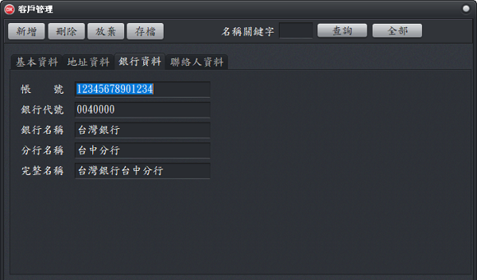

客戶管理
客戶管理是用來管理使用者以外的人如企業(公司、機關)，例如支票的收票人、跨行匯款收款人等相關資料。
- 基本資料：客戶代號：有客戶代號系統才能在列印或預覽時，自動編輯資料(加入或更新)。客戶代號，最好有意義，才能便於記憶及輸入，例如用電話號碼、統一編號的後5碼。
- 地址資料：地址資料於填寫聯絡資料時會用，如用於信封套印。
- 銀行資料：金融業相關文件的填寫、列印都會用到，不同帳號的資料是各自獨立的。
- 聯絡人資料：客戶端的主要聯絡人，如列印跨行匯款單時會用到。
基本資料工作頁
地址資料工作頁

銀行資料工作頁
聯絡人資料工作頁